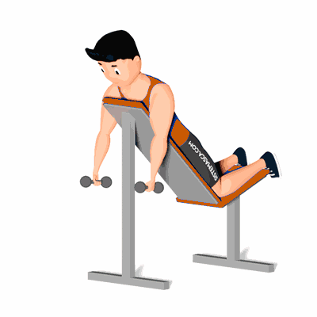

Crucifixo Invertido no Banco Inclinado

Exercício para fortalecimento e hipertrofia dos músculos deltoide, com enfoque na parte posterior.
Ficha Técnica
Tipo: Musculação
Grupo Muscular: Ombro
Aparelho: Nenhum
Músculos: Nenhum
Como realizar
- Deitado de frente num banco inclinado, braços estendidos, segurando dois halteres;
- Levanta os braços para cima, até ao nível das orelhas, com os cotovelos ligeiramente dobrados;
- Abaixa os halteres à posição inicial.
 RC STORE
RC STORE